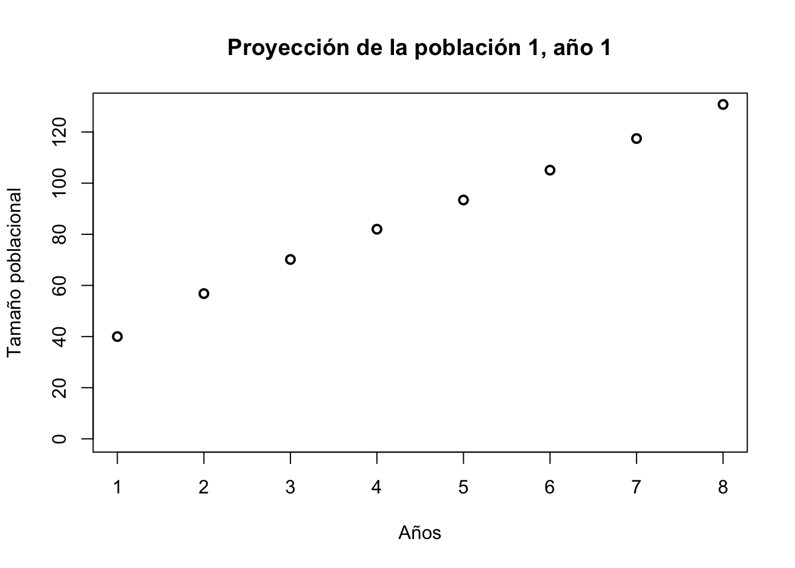
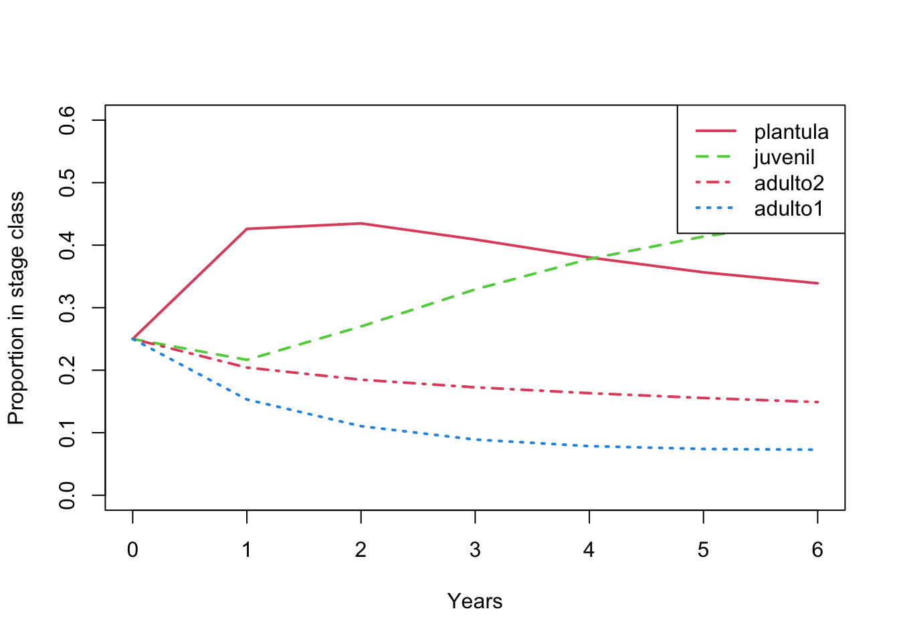

Código
library(popbio)
library(readr)
library(Rage)
library(tidyverse)
library(gt)El crecimiento poblacional describe cómo cambia el tamaño de una población a través del tiempo como resultado de la supervivencia, el crecimiento y la reproducción de sus individuos. Este capítulo presenta los fundamentos conceptuales y matemáticos del crecimiento poblacional en el contexto de modelos matriciales estructurados.
El crecimiento poblacional es una propiedad emergente de la estructura del ciclo de vida y de las tasas vitales que gobiernan las transiciones entre estadios. En los modelos matriciales de población, esta dinámica se resume en la tasa de crecimiento poblacional (λ), que representa el cambio asintótico en el tamaño de la población bajo condiciones constantes.
En este capítulo se introduce el concepto de λ como el valor propio dominante de la matriz de proyección poblacional, y se discute su interpretación biológica en términos de poblaciones en crecimiento (λ > 1), en equilibrio (λ = 1) o en declive (λ < 1). Se muestra cómo λ integra información de supervivencia, crecimiento y fecundidad, y por qué no puede interpretarse aisladamente sin considerar la estructura demográfica subyacente.
A través de ejemplos prácticos, se explora cómo cambios en las tasas vitales modifican λ y cómo esta métrica sirve como punto de partida para análisis posteriores de sensibilidad, elasticidad y proyecciones poblacionales. Este capítulo se diferencia de los anteriores porque establece el vínculo formal entre la estructura del ciclo de vida y la dinámica poblacional global, proporcionando la base teórica sobre la cual se construyen los análisis de manejo, conservación y simulación desarrollados más adelante.
library(popbio)
library(readr)
library(Rage)
library(tidyverse)
library(gt)En los modelos matriciales, uno de los parámetros más útiles es la tasa de crecimiento poblacional proyectada, lambda \(λ\). Su importancia radica en integrar las tasas de crecimiento, supervivencia y reproducción en un sólo parámetro, el cual proyecta qué tan rápido crece o decrece una población. A pesar de su relevancia, \(\lambda\) también es uno de los parámetros que más ha sido malinterpretado. A continuación describiremos qué implica la tasa de crecimiento poblacional, se muestra cómo calcularla y analizamos cómo interpretarla. Para ello, usamos los datos demográficos de Laelia speciosa, una orquídea epífita, cuyos datos poblacionales fueron recabados en dos sitios, por dos años.
La tasa finita o asintótica del crecimiento poblacional, \(\lambda\), es el valor propio dominante de una matriz de transición y corresponde a la solución de dicha matriz. Cuando \(\lambda\) >1 indica que se proyecta que la población crecerá a largo plazo; si \(\lambda\) <1 indica que se proyecta que disminuirá y \(\lambda\) = 1 indica que se proyecta que permanecerá estable. Este parámetro se calcula utilizando la función eigen.analysis en el paquete popbio.
Comenzamos por ingresar dos matrices de transición, una para cada año de monitorio de una poblaciones de Laelia speciosa. Los datos provienen de Mariana Hernández-Apolinar y no han sido publicados.
Ingresa la matriz de transición o genera la desde el archivo que incorpora la transición de los individuos de un año (o un periodo de tiempo) a otro (“stage-fate dataframe”; vea el capitulo “Calcular transiciones para la matriz de Lefkovitch” y “Método bayesiano de calcular las transiciones y fecundidades”). En nuestras matrices de transición, las clases de estado se basan en el peso total de los pseudobulbos que conforman la planta. Los “Adultos” corresponden a individuos que pueden reproducirse sexualmente.
#Ingresa la matriz de transición o generala desde el archivo que incorpora la transición de los individuos de un año (o un periodo de tiempo) a otro ("stage-fate dataframe"; ver el capítulo "Cálculo de transiciones de la matriz de Lefkovitch" y "Método bayesiano para el cálculo de transiciones y fecundidades"). En nuestras matrices de transición, las clases de estado se basan en el peso total de los pseudobulbos que conforman la planta. Los “adultos” corresponden a individuos que pueden reproducirse sexualmente.
#Define los estadios
estadios <- c ("plantula", "juvenil", "adulto1", "adulto2")
#Matriz de la poblacion 1, año 1
mat1.1 <- matrix (c(0.43, 0.00, 1.03, 0.96,
0.32, 0.91, 0.00, 0.00,
0.00, 0.05, 0.82, 0.00,
0.00, 0.00, 0.17, 0.99),
nrow = 4, ncol=4, byrow = TRUE,
dimnames = list(estadios, estadios))
plot_life_cycle(mat1.1, stages = estadios, fontsize = 10)Segunda matriz
#Matriz de la poblacion 1, año 2
mat1.2 <- matrix (c(0.43, 0.00, 0.85, 3.38,
0.32, 0.90, 0.00, 0.00,
0.00, 0.02, 0.77, 0.11,
0.00, 0.00, 0.19, 0.88),
nrow = 4, ncol=4, byrow = TRUE,
dimnames = list(estadios, estadios))
plot_life_cycle(mat1.2, stages = estadios, fontsize = 10)Calcular el \(\lambda\) de la población para los años 1 y 2, respectivamente usando la función eigen.analysis en popbio.
En el primer año se observa que la población tiene un valor de \(\lambda\) > 1.108, lo que indica que la población crecerá a largo plazo de aproximadamente de 11%. En el segundo año, la población también crece (8%) al tener \(\lambda\) un valor de >1.084; aunque al ser menor al del primer año, se indica que la tasa de crecimiento poblacional disminuyó de un año a otro.
options(digits = 5) # Ajusta el número de decimales a mostrar
##Calcula la lambda asintótica de cada población y año
eig1.1 <- eigen.analysis(mat1.1)
eig1.1$lambda[1] 1.1079eig1.2 <- eigen.analysis(mat1.2)
eig1.2$lambda[1] 1.0843t = tribble(~Año, ~lambda, "Año 1", eig1.1$lambda, "Año 2", eig1.2$lambda)
gt::gt(t)| Año | lambda |
|---|---|
| Año 1 | 1.1079 |
| Año 2 | 1.0843 |
La tasa de crecimiento asintótica representa la tasa a la que crecería una población a largo plazo, si no cambiaran las condiciones bajo las cuales se construyó el modelo. Es decir, si no cambiaran en el tiempo las condiciones bióticas, abióticas y de manejo que influyen en las tasas vitales (i.e. tasas de crecimiento, supervivencia y reproducción) de dicha población. Por supuesto, nosotros sabemos que no es posible una consistencia en todas las tasas vitales a largo plazo, siempre ocurren cambios temporales determinístico o estocástico. Por ejemplo, la ausencia de mortalidad de adultos durante los dos periodos de monitorio en nuestro caso. Es seguro que esta condición existe en campo, pero nuestra muestra no lo captó, lo que llevó a reducir el valor de supervivencia en una pequeña fracción -que supone una pérdida de individuos y un valor de permanencia en la categoría menor de 1.0, cuyo efecto es mínimo sobre el crecimiento poblacional. Este tipo de ajuste en las entradas de la matriz lleva a remarcar que es importante que el valor de \(\lambda\) nunca se use en sentido estricto.
También es fundamental tomar en cuenta que, \(\lambda\) no es la tasa a la que se espera que la población creciera en el corto plazo. De hecho, una población con \(\lambda\) <1 pudiera crecer en el corto plazo, antes de declinar en el largo plazo y \(vice-versa\). Asimismo, cabe señalar que la tasa de crecimiento poblacional de corto plazo es calculada usando los índices de la dinámica transitoria (Capitulo 12).
Los meta-análisis (Crone et al. 2013), en cambio, han demostrado que \(\lambda\) es una medida robusta de las condiciones actuales, ya que ésta explica la dinámica de las poblaciones durante el período de tiempo en el que se parametrizaron los modelos. Asimismo, \(\lambda\) es una buena medida del estado de la población, por lo que es una forma apropiada de comparar el comportamiento de las poblaciones bajo diferentes condiciones, incluyendo variación abiótica, biótica y de manejo. Por ejemplo, los valores de \(\lambda\) permiten comparar el comportamiento de una población en distintos periodos de tiempo y con ello entender cómo la variación en las condiciones climáticas afecta su dinámica. Las comparaciones también pueden ser entre poblaciones de la misma especie distribuidas en distintos sitios, para entender los efectos de la variación en el manejo, la vegetación u otras diferencias entre sitios (vea el capítulo “Variación temporal y espacial por simulaciones”)
En esta sección demostramos el crecimiento esperado por año, usando la función pop.projection en el paquete popbio. Esta función requiere que se especifique la matriz de transición, la cantidad de individuos en cada estado al inicio del estudio y el número de años a proyectar. En nuestro caso, proyectamos 7 años.
El resultado es una lista de los siguientes parámetros:
A partir de una población inicial de 10 individuos en cada estadio (25% del total de la población en cada uno) y después de proyectar la población por siete iteraciones, podemos ver el valor de \(\lambda\) esperado es muy similar al calculado anteriormente, ±12% de crecimiento. Las diferencias radican en el vector de estadios, en el cual se observan cambio importantes en la proporción de individuos por estadio. La proporción de juveniles y plántulas de ser un 25 %, respectivamente, incrementa drásticamente y pasa a dominar la población (90 %, suma de ambas) en seis años. El crecimiento poblacional se mide con la suma de los individuos en cada estadio por año proyectado (pop.sizes) sobre la cantidad de individuos del año anterior. Por ejemplo, en el primer año la población pasa de 40 individuos a 56.8 individuos, lo que evidencia un incremento en la abundancia de individuos, correspondiente a un crecimiento de 42% (56.8/40=1.42). En el segundo año se espera que la población crezca de 56.8 a 70.2 individuos, lo que representa un crecimiento de 24% (70.2/56.8=1.24).
pop_1 <- pop.projection(mat1.1, n = c(10, 10, 10, 10), iterations = 7)
pop_1$lambda
[1] 1.1176
$stable.stage
plantula juvenil adulto1 adulto2
0.33904 0.43907 0.07284 0.14904
$stage.vectors
0 1 2 3 4 5 6
plantula 10 24.2 30.503 33.542 35.5279 37.4740 39.8193
juvenil 10 12.3 18.937 26.994 35.2977 43.4899 51.5674
adulto1 10 8.7 7.749 7.301 7.3365 7.7808 8.5548
adulto2 10 11.6 12.963 14.151 15.2504 16.3451 17.5044
$pop.sizes
[1] 40.000 56.800 70.152 81.988 93.413 105.090 117.446
$pop.changes
[1] 1.4200 1.2351 1.1687 1.1393 1.1250 1.1176El crecimiento poblacional proyectado por año se puede visualizar, usando la función plot en el paquete popbio. En este caso, se observa que la población crece de forma exponencial, lo que es consistente con el valor de \(\lambda\) calculado anteriormente. Este mismo código puede ser usado para responder las siguientes preguntas: ¿Qué pasa si cambian el número de individuos en cada estadio inicial? ¿Qué pasa si cambian la cantidad de iteraciones/time a un número grande? Para esto, se tiene que modificar n y el número 7, que representa las iteraciones.
n = c(10, 10, 10, 10) # Definir el número de individuos en cada estadio inicial
cambio = pop.projection(mat1.1, n, 7)
plot(
cambio$pop.size,
type = "b",
xlab = "Año",
ylab = "Tamaño poblacional",
main = "Proyección de la población 1, año 1"
)
La proporción esperada de individuos en cada estadio por año proyectado se puede gráficar usando la función stage.vector.plot en el paquete popbio. En este caso, se ve el cambio proporcional de cada estadio a lo largo de 6 años que la población proyectada es dominada por plántulas y juveniles, lo que es consistente con los valores de cambio$pop.size calculados anteriormente.
n = c(10, 10, 10, 10) # Definir el número de individuos en cada estadio inicial
cambio = pop.projection(mat1.1, n, 7)
stage.vector.plot(cambio$stage.vectors, col = 2:4, ylim = c(0, 0.6))
Nuestra segunda población de Laelia speciosa se establece en un hábitat similar a la población 1 y fue monitoreada durante al mismo tiempo. Sin embargo, ésta fue sujeta a la extracción. Si comparamos los valores de \(\lambda\) de nuestras dos poblaciones, podemos hacer inferencias sobre los efectos de la extracción. La población 2 no produjo frutos y tampoco se observaron plántulas. Debido a esto, fue necesario incluir el valor de 0.001 para la transición de la matriz adulta2-> plántula y con esto asegurar que nuestra matriz de estudio sea irreducible y primitive (Capitulo 10).
#Matriz de la población 2, año 1
mat2.1 <- matrix (c(0.50, 0.00, 0.00, 0.001,
0.16, 0.79, 0.00, 0.00,
0.00, 0.12, 0.78, 0.11,
0.00, 0.00, 0.21, 0.88),
nrow = 4, ncol=4, byrow = TRUE,
dimnames = list(estadios, estadios))
mat2.1 plantula juvenil adulto1 adulto2
plantula 0.50 0.00 0.00 0.001
juvenil 0.16 0.79 0.00 0.000
adulto1 0.00 0.12 0.78 0.110
adulto2 0.00 0.00 0.21 0.880eig2.1 <- eigen.analysis(mat2.1)
eig2.1$lambda[1] 0.99013La población bajo extracción tiene un valor de \(\lambda\) menor (0.990) a aquella en que no se observa esta actividad de manejo. Sin embargo, debemos ser cautelosos con nuestra interpretación sobre los efectos de la extracción, debido a que cualquier diferencia relacionada con la extracción está mezclada o enmascarada con las diferencias entre los dos sitios. Para lograr una comparación robusta, se debe llevar a cabo un experimento de extracción en el mismo sitio o tener varios sitios de extracción y también varios sitios sin extracción.
Para interpretar \(\lambda\) apropiadamente necesitamos calcular los intervalos de confianza (IC). Estos intervalos pueden ser calculados con un método de remuestreo con reemplazo (i.e. bootstrap), utilizando las transiciones de estado de los individuos de un periodo a otro; es decir, los datos (i.e \(stage-fate\)) usados para construir la matriz de transiciones (Capítulo 5). En el remuestro se puede especificar el tamaño de la muestra remuestreada, la cual fue de 1000 en nuestro caso. Cabe señalar que, se tendrán intervalos de confianza amplios cuando se tiene una muestra pequeña de datos originales, o, si se tienen pocas observaciones de aquellas transiciones que contribuyen en mayor medida a \(\lambda\). En adición se puede usar el método en el paquete raretrans (no explicado en este capítulo), que es apropiado para tamaño de muestra pequeñas. La diferencia entre los dos métodos es que la simulación usando el paquete “popbio” se selecciona la cantidad de individuos de los estadios al azar, mientras que el paquete raretrans usa una simulación de basado en la distribución Dirichlet.
En el presente caso, calculamos los intervalos de confianza de \(\lambda\) para la población 1, correspondientes al año 1 y 2. En ambos años, los intervalos son amplios.
Usando la función boot.transitions del paquete popbio, se pueden calcular los intervalos de confianza de \(\lambda\). Esta función requiere que se especifiquen los estadios de la matriz y el número de remuestreos. En nuestro caso, usamos 1000 remuestreos y especificamos los estadios como “pl”, “j”, “a1” y “a2”.
boot.transitions(transitions, iterations, sort = stages)
transitions: un data frame con las transiciones de los individuos de un periodo a otro (i.e. \(stage-fate\)).
iterations: el número de remuestreos a realizar.
sort: un vector con los nombres de los estadios en el orden en que se encuentran en la matriz de transición.
#Intervalos de confianza (IC) de λ para la población 1, año 1
#Indica el directorio de trabajo y definir los estadios
laelia1 <- read.table("data/laelia1.txt", header = TRUE) # subir los datos de la población 1, año 1
pop1.1 = laelia1 # renombrar el data frame para facilitar su uso
stages <- c("pl", "j", "a1", "a2") # identificación de los estadios
n <- nrow(pop1.1) # Crear una variable n que contiene el número de filas del data.frame
x <- boot.transitions(pop1.1, 1000, sort = stages) # la boot.transition selecciona al azar la cantidad de individuos en cada estadios: función esta en el paquete "popbio"
ic1 <- quantile(x$lambda, c(0.025, 0.975))
ic1 2.5% 97.5%
1.0000 1.2173 #IC para la población 1, año 2laelia2 <- read.table("data/laelia2.txt", header = TRUE)
pop1.2 = laelia2
stages <- c("pl", "j", "a1", "a2")
n <- nrow(pop1.2)
x2 <- boot.transitions(pop1.2, 1000, sort = stages)
ic2 <- quantile(x2$lambda, c(0.025, 0.975))
ic2 2.5% 97.5%
0.97023 1.21348 #Nota: Los datos de algunas transiciones especificas no siempre se obtienen de los censos poblacionales, por lo que éstos pueden provenir de otros experimentos. Por ejemplo, si las observaciones de campo fueran nulas o escasas para la transición de semilla a plántula, éste dato se puede obtener de la literatura consultada o de experimentos previos o usar el método descrito en "Método bayesiano para calcular transciones y fecundidades". En estos casos se incorporaron las transiciones a la matriz de la siguiente forma al estimar el IC:
# pl.pl<-0.7 #a la permanencia en plantula se le asigno el valor 0.7
# pl.j<-0.1 #a la transicion plantula-juvenil se le asignó el valor 0.1
# x<-boot.transitions(pop1, 1000, add = c(1,1, pl.pl, 2,1, pl.j), sort=stages)Note que para la población en el primer año el intervalo de confianza de \(\lambda\) es de 1.00 a 1.21, lo que indica que el mejor estimado de la tasa de crecimiento poblacional esperada está entre 0% y 21%. En el segundo año, el intervalo de confianza es de 0.97 a 1.19, lo que indica que la tasa de crecimiento poblacional pudiese ser entre una reducción de ±3% a aumento de 19%.
bind_rows(ic1, ic2) %>%
mutate(year = c("año 1", "año 2")) %>%
select(year, everything()) %>%
rename("IC 2.5%" = `2.5%`, "IC 97.5%" = `97.5%`) %>%
knitr::kable(digits = 3, caption = "Intervalos de confianza de λ")| year | IC 2.5% | IC 97.5% |
|---|---|---|
| año 1 | 1.00 | 1.217 |
| año 2 | 0.97 | 1.213 |
En el ejemplo anterior, hemos asumido que las condiciones bajo las cuales se construyeron las matrices de transición son constantes en el tiempo. Sin embargo, sabemos que esto no es cierto, ya que las condiciones bióticas y abióticas cambian con el tiempo y espacio. Por lo tanto, \(\lambda\) no debe ser interpretado literalmente como un valor específico, ni tampoco como una herramienta predictiva. En trabajos de viabilidad de población uno de los objetivos es evaluar cómo la variabilidad demográfica, biótica y ábiotica impactan las tasas vitales y por consecuencia el crecimiento afecta la dinámica poblacional. Para ello, se puede calcular la tasa estocástica de crecimiento \(λ_e\) (ver más adelante).
La tasa estocástica de crecimiento o \(λ_e\) se puede estimar si se cuenta con datos colectados por 2 o más periodos y, por lo tanto, se tienen 2 o más matrices de transición. La tasa estocástica se puede calcular a través del método de simulación de Cohen o por la aproximación de Tuljarpurkar (Caswell, 2001). En la simulación, las matrices son seleccionadas aleatoriamente para un número específico de intervalos de tiempo (50,000 por omisión en popbio). Se calcula \(λ_e\) como la tasa media del crecimiento para un lapso de tiempo. En la aproximación de Tuljarpurkar, se calcula \(λ_e\) como el valor propio dominante de la matriz de transición promedio. El método de Tuljarpurkar es más rápido, pero menos robusto que el método de simulación. Pero es recomendable solamente cuando la variación entre las matrices de diferentes periodos sean pequeñas (Caswell, 2001), aunque Morris y Doak mencionan que el método funciona bastante bien aunque varían las matrices (Morris & Doak, 2002). En la próxima sección se muestra cómo calcular \(λ_e\).
Es apropiado tomar el tiempo de entender como se calcula \(λ_e\) y cómo se interpreta. En primer lugar, la aproximación de Tuljarpurkar se calcula de la siguiente manera:
\[log(λ_e) = log(\bar\lambda_1)-\frac{1}{2}(\frac{\tau^2}{\bar\lambda_1^2})\],
donde \(\tau^2\) es igual a:
\[\tau^2=\sum_{i=1}^{S}\sum_{j=1}^{S}\sum_{k=1}^{S}\sum_{l=1}^{S}Cov(\alpha_{ij}, \alpha_{kl})\bar{S_{ij}}\bar{S_{kl}}\]
La variable de la ecuación incluye \(\bar\lambda_1\), que representa el log del valor propio (\(λ\)) promedio de las matrices de transición \(\bar{\text{A}}\), en el que cada entrada de la matriz es un valor promedio de los elementos de las matrices analizadas. Si tenemos 4 matrices de transición, \(\bar{\text{A}}\) es la matriz de transición promedio. Por ejemplo, si la transiciones de plántula a juvenil en la matriz 1 es 0.1, en la matriz 2 es 0.2, en la matriz 3 es 0.15 y en la matriz 4 es 0.05, entonces el valor promedio en la \(\bar{\text{A}}\) de la transición de plántula a juvenil sería (0.1 + 0.2 + 0.15 + 0.05)/4 = 0.125. Por consecuencia el valor de \(\bar{\alpha}_{1,1}=0.125\) y así sucesivamente para cada elemento de la matriz.
El componente \(\frac{\tau^2}{\bar\lambda_1^2}\) es un aproximado de la variación temporal del crecimiento poblacional a causa de la estocasticidad temporal. En este caso, \(\tau^2\) es el efecto de la sensitividad de \(\lambda\) causado por los cambios en los elementos \(\bar{\alpha}_{i,j}\). La covarianza \(\text{Cov}\) mide la correlaciones entre las transiciones de estado \(i\) a \(j\) y \(k\) a \(l\) y se denota como \(Cov(\alpha_{ij}, \alpha_{kl})\). Recuerda que no todos los valores en la matriz tienen el mismo impacto si fuesen a cambiar (capítulo de elasticidad). Se espera que algunos de los elementos tengan sobre \(\lambda\) un impacto relativo e influencia de forma positiva y negativa, por lo que la covarianza puede ser positiva o negativa. Por ejemplo, si la transición de plántula a juvenil aumenta, es probable que la transición de juvenil a adulto aumenta también en un buen año, y viceversa. Por lo tanto, la covarianza entre estas transiciones es positiva. La covarianza tendrá un valor negativo, por ejemplo, si aumenta la trasición de plántulas a juvenil, lo cual implicará una reducción en la cantidad de plántulas que siguen en este estadio en el próximo año.
En lo anterior, una vez más, se asume que las condiciones bajo las cuales se construyeron las matrices de transición son constantes en el tiempo. Por lo tanto, \(λ_e\) no debe ser interpretado literalmente, ni tampoco como una herramienta predictiva. En adición los valores de IC se restan y se suma al valor de \(\lambda\) promedio obtenido para tener el rango de 95% de su valor.
matrices <- list(mat1.1, mat1.2) # Crear una lista de matrices de las poblaciones 1 de los 2 periodos de estudio
estocástico <- stoch.growth.rate(matrices, maxt = 50000, verbose = FALSE) # Selección aleatoria de matrices
#estocásticoSe transforma tasa de base log y se obtiene \(λ_e\) por dos métodos (Tuljapukar y simulación) y los IC por simulación
tuljapukar <- exp(estocástico$approx)
simulation <- exp(estocástico$sim)
#tuljapukar # λ por Tuljapukar
#simulation # λ por simulación
ic.1 <- exp(estocástico$sim.CI[1])
ic.2 <- exp(estocástico$sim.CI[2])
#ic.1 # El intervalo de confianza de λs por simulación inferior
#ic.2 # El intervalo de confianza de λs por simulación superiorTul_NA=NA
tribble(~Método, ~λ, ~IC_2.5, ~IC_97.5,
"Tuljapukar", tuljapukar, Tul_NA, Tul_NA,
"Simulación", simulation, ic.1, ic.2) %>%
gt::gt() %>%
gt::tab_header(title = md("Tasa estocástica de crecimiento $λ_e$ y IC") )%>%
gt::cols_label(Método = "Método", λ = "λ_e", IC_2.5 = "IC 2.5%", IC_97.5 = "IC 97.5%")| Tasa estocástica de crecimiento \(λ_e\) y IC | |||
| Método | λ_e | IC 2.5% | IC 97.5% |
|---|---|---|---|
| Tuljapukar | 1.1089 | NA | NA |
| Simulación | 1.1091 | 1.1084 | 1.1099 |
También se puede explorar el efecto de distintos factores que afectan la dinámica poblacional a través de una simulación estocástica, en la que se varia la probabilidad de seleccionar cada una de las matrices con que se cuenta. Por ejemplo, si el año 1 tuvo precipitaciones típicas, mientras que el año 2 fue un año inusualmente seco (uno en diez años), no esperaríamos que la selección de matrices ocurriera con igual probabilidad. En este escenario, podríamos establecer una probabilidad de ocurrencia alta parta el año típico (por ejemplo 0.9) y bajo (por ejemplo 0.1) para el año con sequía.
En nuestro caso, sabemos que es poco frecuente el reclutamiento episódico observado en el segundo muestreo de la población 1, pero también la mortalidad y regresión de adultos observado en ese muestreo es poco frecuente. Por lo tanto, establecimos que la probabilidad de ocurrencia de la matriz 1 (del año 1-año 2) fuera de 0.8, mientras que la probabilidad de ocurrencia de la matriz 2 (del año 2 a año 3) fuera 0.2. De esta forma uno puede similar el efecto de buenos y malos años en la dinámica poblacional, basado en el conocimiento de patrones de variación ambientales que afecte la dinamica de poblaciones. Vemos que \(λ_e\) no cambia mucho en el ejercicio anterior.
estocástico.desigual.9 <- stoch.growth.rate(
matrices,
prob = c(0.9, 0.1),
verbose = FALSE
) ## Selección de acuerdo con probabilidades definidas
#estocástico.desigual.9
#Se transforma tasa de base log y se obtiene $λ_e$ por dos métodos
tuljapukar <- exp(estocástico.desigual.9$approx)
simulation <- exp(estocástico.desigual.9$sim)
ic.1 <- exp(estocástico.desigual.9$sim.CI[1])
ic.2 <- exp(estocástico.desigual.9$sim.CI[2])
#tuljapukar
#simulation
#ic.1
#ic.2
tribble(~Método, ~λ, ~IC_2.5, ~IC_97.5,
"Tuljapukar", tuljapukar, Tul_NA, Tul_NA,
"Simulación", simulation, ic.1, ic.2) %>%
gt::gt() %>%
gt::tab_header(title = md("Tasa estocástica de crecimiento $λ_e$ y IC") )%>%
gt::cols_label(Método = "Método", λ = "λ_e", IC_2.5 = "IC 2.5%", IC_97.5 = "IC 97.5%")| Tasa estocástica de crecimiento \(λ_e\) y IC | |||
| Método | λ_e | IC 2.5% | IC 97.5% |
|---|---|---|---|
| Tuljapukar | 1.111 | NA | NA |
| Simulación | 1.111 | 1.1104 | 1.1116 |
A continuación, evaluamos cómo se ve afectada \(λ_e\) al disminuir o aumentar la probabilidad de que ocurran las diferentes matrices. En nuestro ejemplo aumentamos a 0.8 la probabilidad de ocurrencia de la matriz 2 (la que represente reclutamiento episódico y mortalidad/regresión de adultos), y observamos que \(λ_e\) decrece. Este método es útil porque permite explorar cómo la variabilidad en las condiciones afecta la dinámica poblacional dentro de un escenario representativo de la estructura de la diversidad de poblaciones. Por ejemplo considera que originalmente la especie se encontraba en un hábitat continuo, pero que debido a la deforestación, la población se ha fragmentado y ahora se encuentra en hábitats con condiciones subóptimas, y que domina ahora estas poblaciones fragmentados versus pocas poblaciones en un hábitat de mejor calidad.
estocástico.desigual.2 <- stoch.growth.rate(
matrices,
prob = c(0.2, 0.8),
verbose = FALSE
)
#estocástico.desigual.2
tuljapukar <- exp(estocástico.desigual.2$approx)
simulation <- exp(estocástico.desigual.2$sim)
ic.1 <- exp(estocástico.desigual.2$sim.CI[1])
ic.2 <- exp(estocástico.desigual.2$sim.CI[2])
#tuljapukar
#simulation
#ic.1
#ic.2
tribble(~Método, ~λ, ~IC_2.5, ~IC_97.5,
"Tuljapukar", tuljapukar, Tul_NA, Tul_NA,
"Simulación", simulation, ic.1, ic.2) %>%
gt::gt() %>%
gt::tab_header(title = md("Tasa estocástica de crecimiento $λ_e$ y IC") )%>%
gt::cols_label(Método = "Método", λ = "λ_e", IC_2.5 = "IC 2.5%", IC_97.5 = "IC 97.5%")| Tasa estocástica de crecimiento \(λ_e\) y IC | |||
| Método | λ_e | IC 2.5% | IC 97.5% |
|---|---|---|---|
| Tuljapukar | 1.0967 | NA | NA |
| Simulación | 1.0969 | 1.0964 | 1.0973 |
En general, \(λ_e\), al igual que \(λ\), es útil cuando se caracterizan las condiciones, ya sea actuales o pasadas del periodo de tiempo en que se monitorea a las poblaciones. También es una herramienta poderosa para explorar la fuerza relativa de diferentes factores en el crecimiento poblacional. Sin embargo, al igual que \(λ\), \(λ_e\) no debe interpretarse literalmente para predecir el futuro.
Es importante recalcar algunos puntos importante sobre el crecimiento poblacional. Primero, la tasa de crecimiento poblacional es una medida robusta de las condiciones actuales, ya que explica la dinámica de las poblaciones durante el período de tiempo en que se parametrizaron los modelos. Segundo, la tasa de crecimiento poblacional es una buena medida del estado de la población, por lo que es una forma apropiada de comparar el comportamiento de las poblaciones bajo diferentes condiciones, incluyendo variación abiótica, biótica y de manejo. Por último, la tasa de crecimiento poblacional es una medida útil para comparar el comportamiento de las poblaciones en distintos periodos de tiempo y con ello entender cómo la variación en las condiciones climáticas afecta su dinámica. Las comparaciones también pueden ser entre poblaciones de la misma especie distribuidas en distintos sitios, para entender los efectos de la variación en el manejo, la vegetación u otras diferencias entre sitios.
Reconocer que \(\lambda\), el crecimiento poblacional estimado de dos periodos, no considera la variabilidad en las tasas vitales por cause de procesos estocásticos, espacial ni temporal, por lo que es importante que se realicen análisis de sensibilidad para evaluar el impacto de la variabilidad en las tasas vitales en la estimación de \(\lambda\).
La interpretación de λ se complementa con el análisis de elasticidad poblacional, que permite evaluar la importancia relativa de cada transición del ciclo de vida.
Revisión:
RLT 2025_01_18
RLT 2025_06_01
MHA 2025_06_29